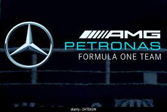
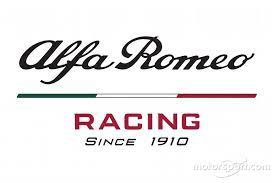

RedBull
1º 623 pts
RedBull es el equipo que mas ha conseguido mejorar el coche, la temporada pasada ya tenían un cohete que han aprovechado de muy buena manera esta temporada, has conseguido por el momento un porcentaje de podios casi perfecto con un cohete sobre ruedas, todo apunta a que serán campeones de constructores
Mercedes
2º 305 pts
Mercedes la temporada pasada no consiguieron muchos exitos, solo una pole y 1 victoria, no es a lo que acostumbran pero año nuevo mejoras nuevas y parece que les funciona a los alemanes 1 pole de su estrella Lewis Hamilton en Hungria les hace gritar ante los grandes, ¿conseguirán ese segundo puesto en constructores?
Ferrari
3º 285 pts
Ferrari hace 12 meses ilusionaron con las mejoras que toda la Italia motorista necesitaba, no consiguieron mas que 5 victorias y 5 poles, esta temporada solo hemos tenido una pole y victoria del magistral Carlos Sainz, que nos regaló los 2 ejemplos mas claros de talento en el deporte, la velocidad del cabalino rampante en el templo de la velocidad (Monza) y la calma en la tormenta de Singapur durante 70 vueltas de infarto, esperemos que sigan así
Aston Martin
4º 221 pts
Aston Martin acabaron de los últimos en sus dos primeras temporadas en el gran circo de la Formula 1, pero esta temporada con la llegada del rejuvenecido Fernando Alonso han conseguido un 100% de finales en el top 10 en clasificaciones y 7 podios, junto al de Sebastan Vettel en 2021 suman un total de 8 podios en los libros de la historia del equipo britanico, ¿llegarán las victorias?
McLaren
5º 172 pts
McLaren tuvo un invierno bastante positivo, consiguieron el fichaje del prometedor campeón de Formula 2, Oscar Piastri y pese que no empezaron bien, los 2 pilotos han regalado recitales de conducción, con 6 podios entre el britanico y el australiano se posicionan como candidatos a retomar ese tercer puesto en constructores que les dió Carlos Sainz en esa terrible epoca pandemica ¿Lo conseguirán?
Alpine
6º 84 pts
Alpine llegaron a la temporada 2023 muy justos y con muy mal ambiente internamente pero sus pilotos, ambos franceses, han conseguido darle al equipo galo 2 podios, 1 cada piloto, no han mejorado mucho pero sus fans esperan ver a Pierre Gasly o a Esteban Ocon repitiendo victorias, ¿Llegarán tan alto?
Williams

7º 21 pts
Williams siempre tuvo fama de ser de los mejores aunque estén sumidos en un pozo, eso no ha evitado que Alex Albon y Logan Sargeant consigan puntos y muy buenas carreras con maquinaria muy inferior al rendimiento real en pista, ¿Es esto una premonición de una resurrecnión?
Haas
8º 12 pts
Haas sigue buscando el escalón que les propulse a los podios y a las victorias, aunque no haya tenido suerte con el coche y sus pilotos, muy pocos puntos y carreras algo mediocres pero siguen en la palestra para salir del fondo de la parrilla, ¿Dentro de pronto veremos a un midfielder?
Alfa Romeo
9º 10pts
Alfa Romeo desde que decidió volver en 2018 no ha tenido grandes actuaciones solo algunos top5 y top 6, aunque aposten por jovenes estrellas, necesitan mejorarse, nos encantaría ver al frio Valtteri en el podio otra vez, pero será difícil
Alpha Tauri

10º 5 pts
Alpha Tauri no ha sido nunca un equipo top, pero siendo el representante de la escuela de desarrollo de RedBull, apuestan por sus jovenes promesas para que se vean si merecen el sitio en el equipo A o si se quedan en el equipo B, que buena estrategia, ¿no?